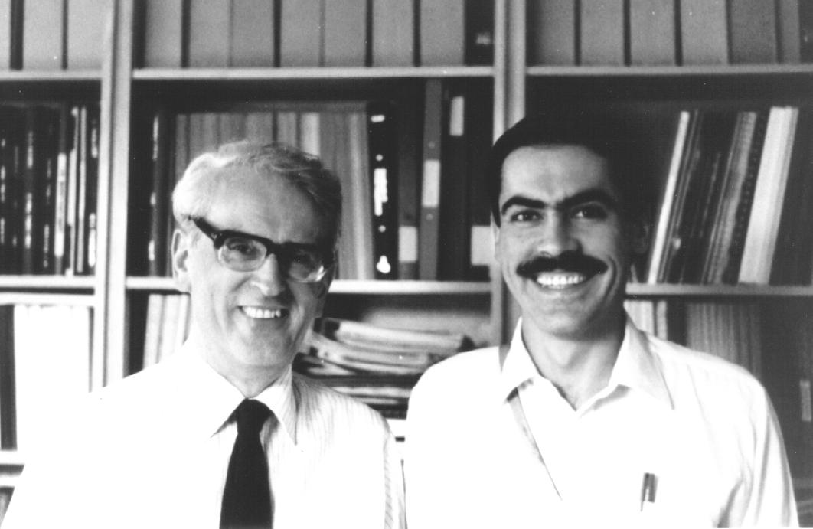

David Chilcot Phillips, more than a Mentor
Adolfo Cordero-Borboa
an ordinary member of the BCA
Institute of Physics, UNAM, México.
E. Mail: cordero@fenix.ifisicacu.unam.mx
I first met Prof. David Phillips in Oxford at the beginning of the summer of 1985. I had just arrived as a British Council postdoctoral research visitor at the Laboratory of Molecular Biophysics in the Department of Zoology at the University to get trained as a protein crystallographer under the supervision of Prof. Phillips. Mrs Pam Batchelor was in charge of the Secretary's Office of the laboratory at that time and it was she who first opened the door of the professor's office for me. I remember that first meeting with Prof. David Phillips. He was standing at the back of his desk, opposite to the wooden shelf where he kept the published scientific articles and reports that he and his collaborators had written. Those papers were bound in volumes with board bindings and most of the shelf was full of that sort of volume. He welcomed me to the lab and then made a comment about how keen he was to have a Mexican young researcher in team. During that interview he asked me to call him David from then on. The first thing David did after that interview was to introduce Drs. Brian J. Sutton and Peter Artymiuk to me, who certainly were the most kind and patient research colleagues of mine for almost two and a half years.

David Chilcot Phillips and the author in the Laboratory of Molecular
Biophysics in Oxford, at the end of the summer of 1987 (photograph taken by
Dr. Mohan Bhadbhade).
David, Brian, Peter and I got involved in working to solve the crystalline three-dimensional structure of the metalloenzyme beta-lactamase II. This enzyme, with 227 residues and a molecular mass of about 25 kDa, is one of two extracellular beta-lactamases produced by Bacillus cereus 569/H/9 and it is active against penicillins and cephalosporins. David, who at that time was leading other research projects in the lab as well as various relevant affairs related to the scientific politics of the United Kingdom, had always time enough to act, not only as a guide for the people during the experimental and conceptual works related to crystallography, but to be also like a father for some, particularly for his students and young researchers from abroad. I was included amongst the last ones. I was honoured by David's invitations to have some Sunday meals with him and his wife at their home. There, while we all were enjoying a glass of sherry, he used to unfold a large map of Mexico out on the living-room carpet and to point out on the map those places of my country where he had been in the past. With his lively conversation about Mexico and England he managed to make the far away time into a familiar time with plenty of opportunities for learning about human cultures, in particular about the English one. Some other times, mainly summer times, I met David in the University Parks, where he used to have his dogs as companions while taking walks by the Cherwell. Then, he used to address me by asking "How is the beta-II work going?", as an introduction for easy communication.
When the crystalline structure of beta-II was solved with a resolution of 3.5 Å the time for me to go back to Mexico was coming close and I visited David in his home in order to thank him for the lot of great experiences that I had had during the time expended in the lab. During that visit I gave to David, as a souvenir from my country, a clay-made mask representing a smiling human face with the typical features of the Mexican Nahuatl culture. He appreciated in great manner that souvenir as I was able to deduce from the fact that he and his wife started then a conversation that led them to make a decision about which was the best place in their dinning-room walls to hang the Nahuatl mask on. I left Oxford at the end of the summer of 1987.
David Phillips was for me, as certainly he was for other young crystallographers who worked by his side from all around the world, not only a magnificent research supervisor, nor only a mentor on crystallography, but a gentleman to be followed amongst the best because of his exceptional manner to be as keen about the persons as about the progress of their professional works. In those days, far away from home, David was always there to give us support and to make the work attractive and easy to do. I would like to thank, through this BCA Newsletter issue, David C. Phillips for spreading to excess his gifts among us.
Editor's note: I was pleased to meet Dr Cordero-Borboa at the IUCr
XVIII Congress in Glasgow last year and encouraged him to send me his
reminiscences of David Phillips and his kindness to visitors. I publish it
here to show that David Phillips had a very human side as well as the more
formal side shown in his work for the Research Councils
(see Obituary, June 1999 issue 69 of Crystallography News, pages 28-32).
 Click here to return to BCA homepage
Click here to return to BCA homepage